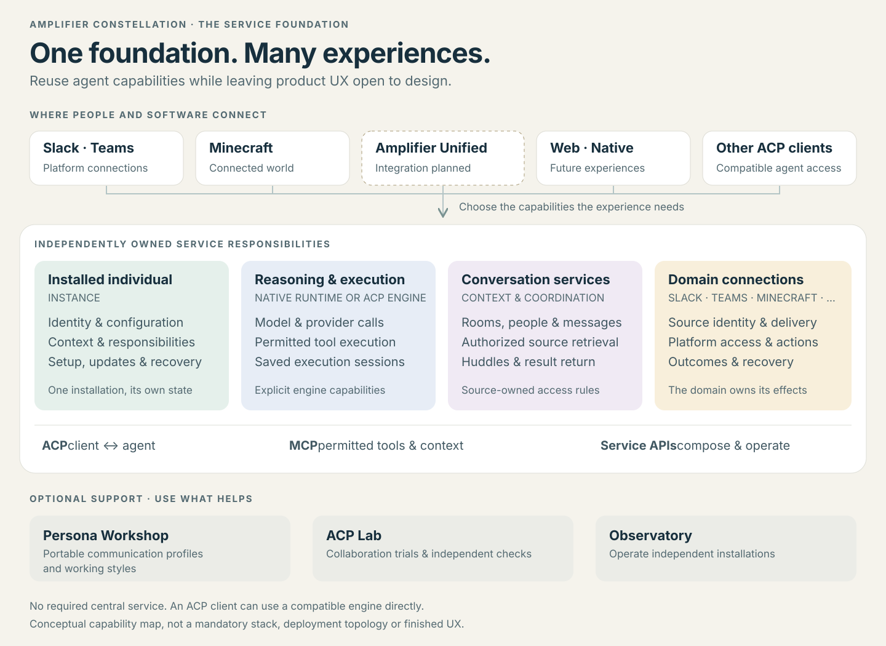
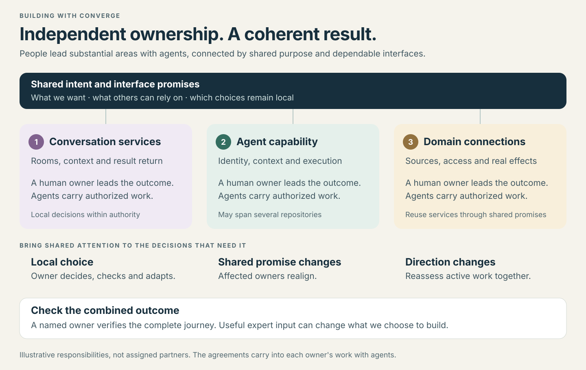

Which assistant is this?
Instance preserves the installed individual's identity, configuration and responsibility records. Several connections can reach the same individual.
A guide for collaborators
A foundation of reusable services for persistent agents—so people can work with them across tools, and partners can improve substantial areas independently.
01 / THE PARTS
Each part owns a coherent responsibility. Different people can deepen those capabilities without requiring a single application, engine, machine or central service.

Instance preserves the installed individual's identity, configuration and responsibility records. Several connections can reach the same individual.
The engine works with input and permitted context, calls models and tools, and retains its execution session.
Conversation services provide their own rooms and huddles. Slack and Teams still own their platform conversations and audiences.
Domain connections provide attributed information and authorized actions, then report what actually happened.
An experience shapes asking, inspecting, redirecting and judging. It can explore new interaction designs using these shared services.
Sources keep their conversations; engines keep execution history; domains keep effect evidence. See who preserves what →
An agent can participate in several places. Sources keep their audience and access rules; assignments keep their own authority. Another connection does not inherit every permission.
02 / THE CONNECTIONS
Use the interface for the responsibility it owns. Detailed schemas and compatibility tests live with the serving component. Expand a card for the practical exchange. These are explanatory shapes; precise fields stay with the interface owner.
Conduct a conversation with an agent.
The client and engine discover capabilities, open or load a supported session, exchange input and output, handle permissions and stop explicitly.
A compatible engine can be used directly. Optional Instance features are negotiated; ACP does not provision a fleet.
Connect permitted tools and context.
An engine discovers a tool, reads a source or asks a domain to perform an action. The resource owner validates authority and reports the actual result.
A visible tool is not a grant of permission. A request being accepted is not evidence that its effect finished.
Compose and operate capabilities.
Clients manage identity and connections, access authorized conversations, inspect work and request supported lifecycle operations.
These APIs belong to their services. A new product can use them without adopting today's control-panel layout.
It brings platform input to an agent as an ACP client, and exposes authorized platform tools or context through MCP or service APIs. The connector still owns source identity, delivery and domain effects.
03 / THE FLOW
Trace one piece of work across the services. A voice, chat or future native experience can present it differently while preserving the meaning.
“Prepare a launch-readiness brief from these approved notes. Highlight unresolved decisions and report back in this Slack thread.”An illustrative design exercise, assuming authorized sources and participating agents are available for the trial.
Slack retains the source and thread. The connector reaches the intended individual and its engine.
The engine uses permitted tools. Sources return evidence and its coverage.
Agents reuse a suitable room or huddle. People can inspect or join the discussion.
A changed launch date reaches ongoing work through its supported input path.
The result and unresolved decisions reach the original thread. A brief does not approve a launch.
People can join when useful. Results, changed commitments and decisions come back. Ordinary clarifications preserve useful work; Stop is explicit. A lost acknowledgment is reconciled rather than replayed.
04 / BUILD TOGETHER
Converge connects shared direction to each person's work with agents. People continue leading priorities, judgment and investment; agents carry authorized operational work.

Bring a concrete outcome, evidence and a question. A colleague can improve the direction without supervising every implementation detail.
Owners make ordinary decisions within authority. A shared-promise change brings the affected owners together.
Compare current reality with current intent. Revise the next work; do not depend on a maintained inventory of yesterday's gaps.
05 / BRING AN IDEA
You can incubate an idea within a capability or across several. Name one owner for the outcome and work with the owners of the affected services.
Start with the experience. Reuse service operations and explore how people ask, inspect and redirect.
Start with a connector or tool service. Own the domain's access, actions and observed outcomes.
Start with the engine, context or coordination owner responsible for that behavior. Check the whole result.
Explore the roles, interface shapes, information ownership and complete example →
START A CONTRIBUTION
Choose a useful outcome, identify the promises at its boundaries, and name who checks the combined result. The implementation can evolve while the shared meaning remains dependable.